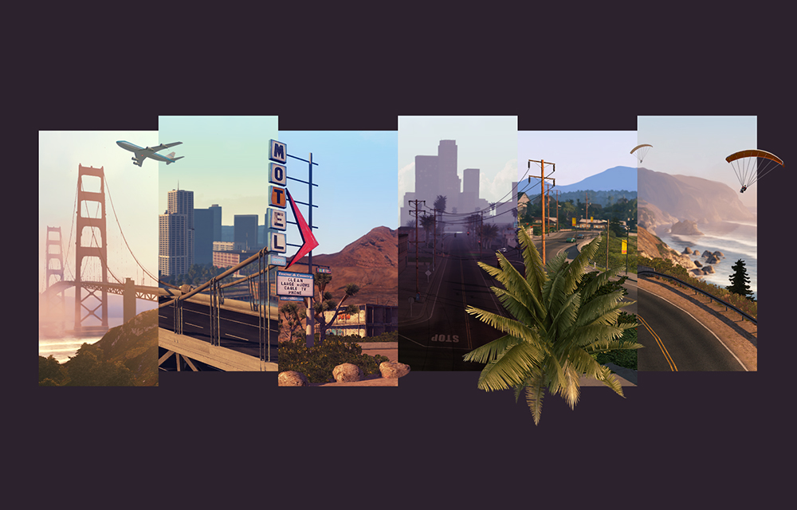
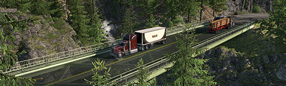
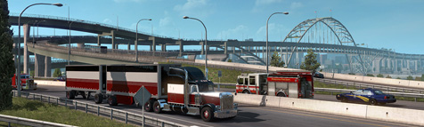
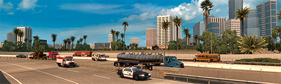
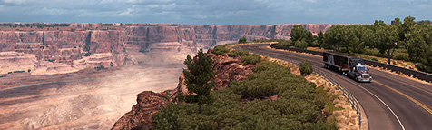
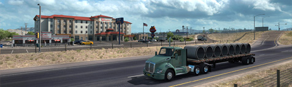
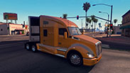
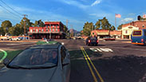
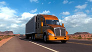

Управляйте самыми известными американськими грузовиками и доставляйте различные грузы по соединенным штатами.

Перевозка по легедарным дорогам
American Truck Simulator проведет вас по бескрайним пейзажам, полным захватиющих дух и знаковых достопримечательностей северной Америки.
Вашингтон

Почувствуйте естественную красоту «Вечнозеленого штата» Вашингтон, от пляжей Тихоокеанского побережья до заснеженных горных хребтов и шумных городов, таких как Сиэтл и Спокан. Вашингтон покрыт большим количеством лесных угодий, наряду со многими другими разнообразными биомами. Он также является домом для некоторых из крупнейших американских отраслей промышленности и бизнеса, а также является ведущим производителем многих фруктов и овощей.
Орегон

Спуститесь по дороге, чтобы ощутить дикую красоту штата Бобр, штат Орегон. Его природная красота включает густые леса, множество акваторий и рек, а также вулканы, высокие пустыни и засушливые кустарники.
Вечнозеленые природные пейзажи будут сочетаться с пустынной природой, а также с густыми городскими районами, такими как Портленд и Салем.
Калифорния

Калифорния является самым густонаселенным штатом США с 39 миллионами человек и третьим по величине штатом по площади 158706 кв. Миль.
Транспортная система Калифорнии сложна и динамична, известна своей автомобильной культурой и обширной сетью автострад и дорог. Быстро растущее население штата напрягает все его транспортные сети.
В Калифорнии насчитывается 168 076 миль (270 492 км) дорог общего пользования, улиц и автомагистралей. 20 огромных городов и небольших городов, ожидающих изучения, включая Лос-Анджелес, Окленд, Сан-Франциско и другие. Проезжайте по разнообразным дорогам - от узких до шоссе Тихоокеанского побережья, известного как Государственный маршрут 1, оно движется с севера на юг, буквально охватывая в основном береговую линию.
Пройдите несколько достопримечательностей, включая живописные места, известные мосты и исторические здания. Исследуйте географическое разнообразие - от гор Сьерра-Невада до Тихоокеанского побережья, от еловых лесов до пустыни.
Неведа
Невада (в переводе с испанского означает «покрытый снегом») является 7-м по величине (110 561 кв. Ми), 35-м по численности населения (2 890 845 человек) и 9-м по плотности населения из 50 Соединенных Штатов. Экономика Невады связана с туризмом (особенно с развлечениями и азартными играми), добычей полезных ископаемых и разведением крупного рогатого скота. Невада была основана на горном деле и заново основана на грехе - начиная с борьбы с призами и легкого развода столетие назад, а затем и в играх и проституции.
В Неваде 37,854 мили дорог общего пользования и улиц. Основные автомагистрали I-80 и I-15 связывают Солт-Лейк-Сити с Рено и Лас-Вегасом, соответственно. Откройте для себя Серебряный штат с его 10 крупнейшими городскими центрами Лас-Вегас, Карсон-Сити и Рено. Cross The Strip - знаменитый ряд казино в сказочном городе Лас-Вегас. Проезжайте по красочной пустыне к далекому горизонту. Почувствуйте безмятежные, открытые и мирные пейзажи с парковыми трейлерами и вьючками.
Аризона

Аризона (навахо: Hoozdo Hahoodzo) является шестым по величине и 14-м по численности населения из 50 штатов. Южная Аризона известна своим пустынным климатом, с очень жарким летом и мягкой зимой. В северной Аризоне много сосновых лесов, плато Колорадо и некоторых горных хребтов с гораздо более умеренными летними температурами и значительными зимними снегопадами.
Аризона полна природы - области Флагстафф, Альпийский и Тусон известны своими горнолыжными курортами. Есть национальные памятники, леса и парки в дополнение к Национальному парку Гранд-Каньон. Кроме того, большая часть штата состоит из резерваций коренных американцев.
Городские районы обслуживаются сетью государственных маршрутов и автомагистралей. Основу транспортной системы Аризоны составляют основные межгосударственные маршруты. Это включает I-17 на севере-юге и I-19, который ведет к мексиканской границе. Основные маршруты восток-запад покрыты I-8, I-10 и I-40.
Нью-Мексико

Откройте для себя тонкую красоту ландшафта Нью-Мексико. Его прозвище - «Страна Чар» - идеально подходит. Множество уникальных природных пейзажей будут сопровождать вас на протяжении всех перевозок, две поездки никогда не будут ощущаться одинаково.
Проезжайте через урбанизированные районы, такие как Альбукерке, малонаселенные торговые посты, остановки для отдыха посреди пустыни, густые леса и горные хребты. Нью-Мексико может многое предложить с точки зрения разнообразия ландшафтов. Пересечение Рио-Гранде, посещение Национального леса Карсон, Пика Бэйлор, Скалы Пирамиды и других природных достопримечательностей.
Проведите ночь, отдохните, заправьтесь и отремонтируйте свой грузовик на одной из многочисленных уникальных остановок для грузовиков вокруг автомагистралей Нью-Мексико. Полюбуйтесь красными закатами, проезжая мимо узнаваемых монументальных скальных образований.
Нью-Мексико (навахо: Yootó Hahoodzo) является пятым по величине по площади и 36-м самым густонаселенным из штатов США. У этого углового государства есть разнообразная природа, которая включает пустыни, высокие равнины и горы. Климат, как правило, от полузасушливого до сухого, потому что в Нью-Мексико очень мало воды.
Станьте королем дороги
Сядьте на место водителя на прокат, который делает работу для местных компаний. Сдейлате первые шаги и отправьтесь в долгое путишествие, основав одну из крупнейших транспортных компаний в соединенных штатах.
Начать карьеру

Как внештатный водитель, посмотрите на рынке грузоперевозок для быстрой работы с легкой доставкой. Таким образом, вы можете заработать достаточно денег, чтобы купить свой собственный большой велосипед.
Получить мечту

Купи свой первый грузовик! Это открывает новые возможности - теперь вы можете самостоятельно найти работу на рынке грузоперевозок, а это значит, что с каждой доставкой в ваши карманы будет уходить больше денег.
Расширтесь в других городах

Чтобы получить еще большую прибыль, вы должны не просто расширить свой гараж, но и купить новый в других крупных городах. Это позволяет вам держать больше грузовиков и, наконец, позволить вам нанять водителей, которые будут работать на вас. Выберите подходящих кандидатов и предоставьте им лучшие грузовики, которые принесут пользу вашему бизнесу. Время нанимать!
Станьте грузчиком
По мере роста вашей компании вы должны расширять свой флот и рабочую силу, чтобы ваша прибыль увеличивалась с ростом вашей империи. Работая усердно и принимая правильные решения, у вас есть шанс стать единственным и единственным Королем грузовиков!